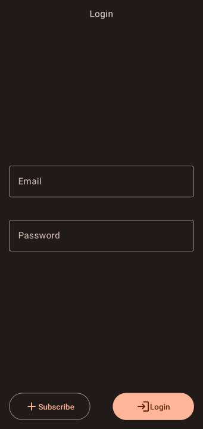
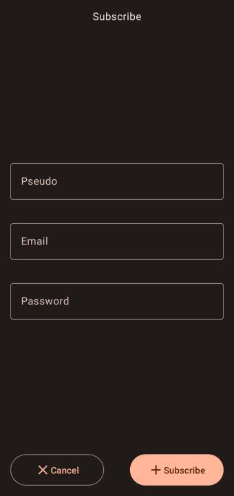
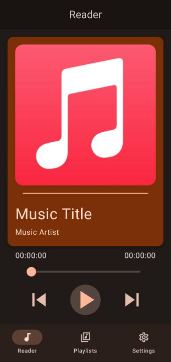
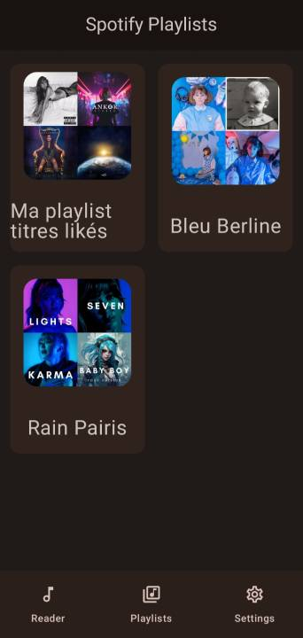
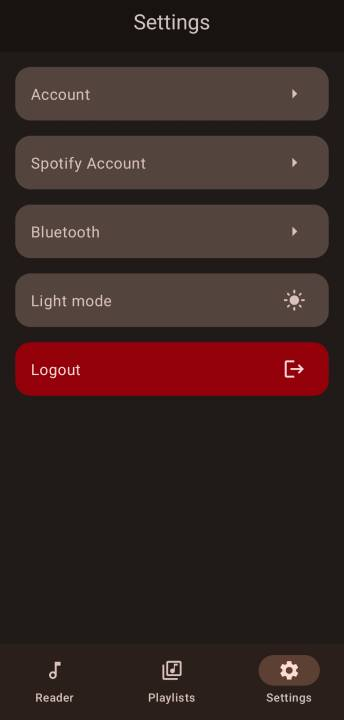

MusicalXSpotify
INFO
Projet réalisé en 3ème année de BUT.
Retrouvez le projet sur mon GitHub: Musical X Spotify
Musical X Spotify est une application de musique utilisant l'API de Spotify, pour lire des musiques venant du téléphone et du compte Spotify de l'utilisateur.
Développer dans le cadre des cours de développement de ma 3ème année de BUT. Ce projet a été réalisé sur l'ensemble du semestre 5 de mon BUT.
Les technos
Le projet est développé en Kotlin et en Jetpack Compose.
Je n'apprécie pas l'approche XML proposé de base par android studio, lorsque j'ai découvert le Jetpack Compose j'ai tout de suite compris que cette nouvelle approche proposé par Google depuis 2021 était très pertinente, d'où mon choix pour cette application.


Consignes du projet
Réaliser dans le cadre des cours de développement mobile, les consignes pour ce projet était libre. Les éléments à respecter étaient de
- Mettre en place une base de données
- Utilisé une API
- Implémenter le design Model Vue Vue Model (MVVM)
- Ajouter Firebase pour au minimum utiliser Crashlytics
Visuel de l'application
L'interface de l'application a été réaliser durant les cours de design UI / UX dispensé au début de cette 3ème année.
 Screenshot de la page de connexion  Screenshot de la page d'inscription  Screenshot du lecteur  Screenshot de la page des playlists  Screenshot de la page des paramètres